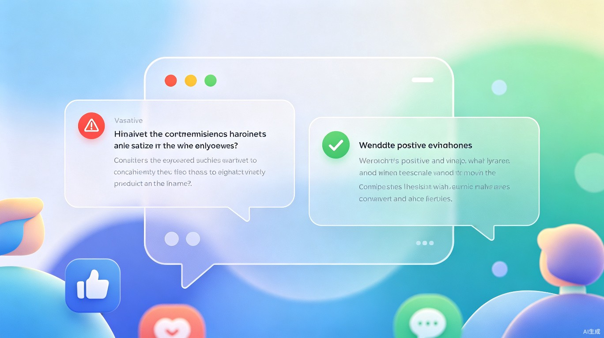
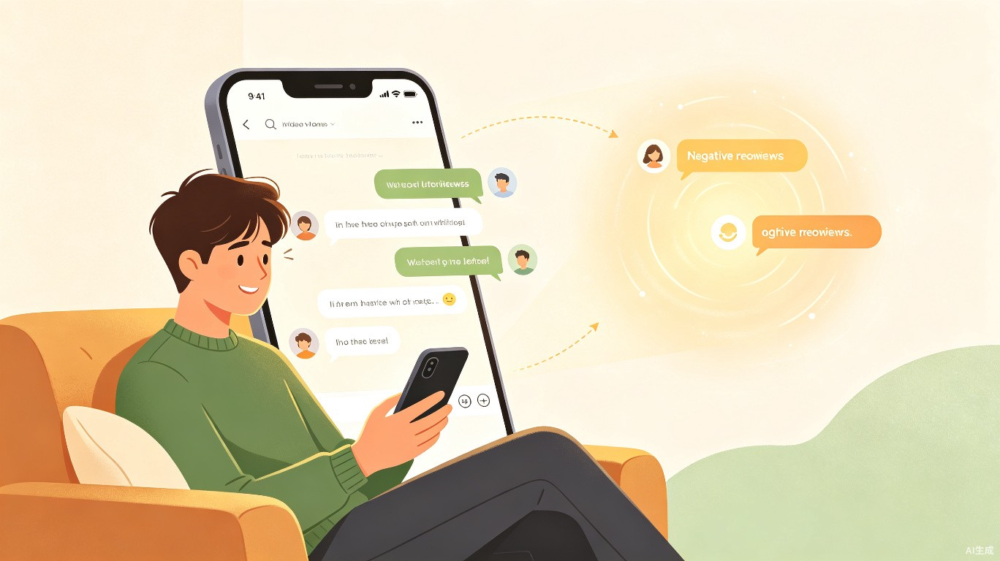

语和 — 让每一次评论都传递善意
基于大模型的智能评论改写系统，将网络交流中的尖锐言辞转化为温和表达，构建更友善的社交环境

创意介绍
想解决什么问题
在B站、抖音等视频平台的评论区，用户常常因为表述不够平和而引发不必要的争论和争吵。很多时候，发言者本身并无恶意，但措辞的尖锐性容易被他人误解，导致社区氛围恶化，甚至演变为网络暴力。
灵感来源
我们经常看到这样的场景：一个原本中性的观点，因为使用了带有情绪色彩的词汇，就引来一连串的激烈回复。这让我想到——如果能在保留原意的前提下，让表达方式更加温和，许多冲突其实是可以避免的。就像现实中，委婉的措辞往往能让对话更顺畅。
产品形态
语和是一款基于浏览器插件/平台内嵌系统的智能评论改写工具，在用户发布评论时自动优化措辞，或对已发布的评论进行温和化处理，让其他用户看到更加友善的版本。
产品名称
语和 — 以语为桥，和谐共处
产品形态
浏览器插件 / 平台SDK / 小程序
核心能力
大模型驱动的实时评论改写
应用赛道
生活娱乐 + 社会公益
目标用户及痛点
核心用户群体
视频平台活跃用户
日均浏览B站、抖音等平台超过1小时，习惯在评论区互动交流的年轻用户
内容创作者
希望维护良好社区氛围，减少评论区争吵和负面情绪的UP主和博主
平台运营方
需要降低社区管理成本，提升用户留存和互动质量的互联网平台
使用场景
用户在观看视频后，想要发表自己的看法。输入评论时，系统实时分析文本的情感倾向和措辞强度；如果检测到可能引起争议的表达方式，自动提供温和化改写建议或直接替换展示。其他用户看到的将是优化后的友善版本，而发言者的原意也得到了保留。

用户在舒适的环境中浏览视频，AI在背后默默优化评论氛围
当前痛点
如果没有「语和」：
- 评论区充斥着情绪化、尖锐化的表达，阅读体验差
- 用户因为措辞不当被误解，引发不必要的争执和网暴
- 平台需要投入大量人力进行评论审核和冲突调解
- 优质内容因为评论区氛围恶劣而影响传播效果
- 理性声音被淹没，极端言论占据主导
价值与意义
商业价值
提升用户留存和活跃度，降低社区管理成本。友善的社区氛围能吸引更多品牌合作，为平台创造额外收益。
效率提升
自动化处理海量评论，减少90%以上的人工审核工作量。用户无需刻意斟酌措辞，降低表达门槛。
社会价值
从根源减少网络冲突和暴力，促进理性交流。让互联网成为更有温度的公共空间，构建和谐社会关系。
更多社会意义
在这个信息爆炸的时代，语言的力量被前所未有地放大。一句不当的评论可能影响一个人的一天，甚至一生。「语和」不仅仅是一个技术工具，更是一种对文明交流的倡导——我们相信，技术的温度可以改变社会的态度。
通过降低冲突发生的概率，我们为每个人创造了一个更安全、更友善的表达环境。这不仅有利于个人心理健康，也有助于构建更加包容、多元的互联网文化。
🎮 交互演示
看看「语和」如何改写评论，化干戈为玉帛
技术实现思路
「语和」的核心技术栈包括：
- 大语言模型：基于先进的大模型能力，理解评论语义和情感倾向
- 情感分析：识别评论中的负面情绪、攻击性措辞和争议性表达
- 语义保持：在改写过程中确保原意不变，仅优化表达方式
- 上下文感知：结合视频内容和对话上下文，提供更精准的改写
- 实时处理：毫秒级响应，不影响用户发布评论的流畅体验
我们采用「透明改写」策略——在评论旁标注「已由语和优化」，让用户知道内容经过了温和化处理，既保证了信息透明，也逐步培养用户更友善的表达习惯。
以语为桥，和谐共处
我们相信，每一个善意的表达都值得被温柔对待。通过技术的力量，让网络世界变得更加温暖——这就是「语和」的初心。